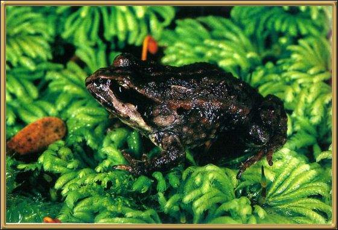

This froglet was apparently only discovered in 1994 and is found only in the very south west of Tasmania. The tadpoles develop and change into frogs inside their eggs. They stay dormant during Autumn and Winter.
Photographer: Gordon Grigg